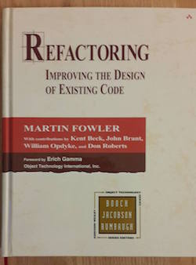
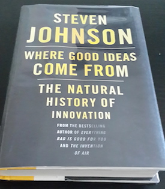

Blog
-
Refactoring - Improving the design of existing code
"With refactoring you can take a bad design, chaos even, and rework it into well-designed code. Each step is simple, even simplistic. You move a fieldfrom one class to another, pull some code out of a method to make into own method, and push some code up or down a hierarchy." - Martin Fowler
I am currently reading this book by Martin Fowler. The interest in refactoring and good design increased after I took CS-308: Software Design and Implementation course in Fall 2015. Since then I have tried to use the SOLID design principle and reading this book is one further step to improve my design skills.
 -
Where good ideas come from - The natural history of innovation
July 11, 2016
"Good ideas are not just conjured out of thin air, they are built out of a collection of existing parts, the composition of which expands (and occasionally contracts) over time." - Steven Johnson
"Exploring the adjacent possible can be as simple as opening a door. But sometimes you need to move a wall." - Steven Johnson
I am currently reading this book and am amazed by how the author has analyzed innovations in different period of time. Here is a link for TED Talk by Steven Johnson.
 My Tumblr blog